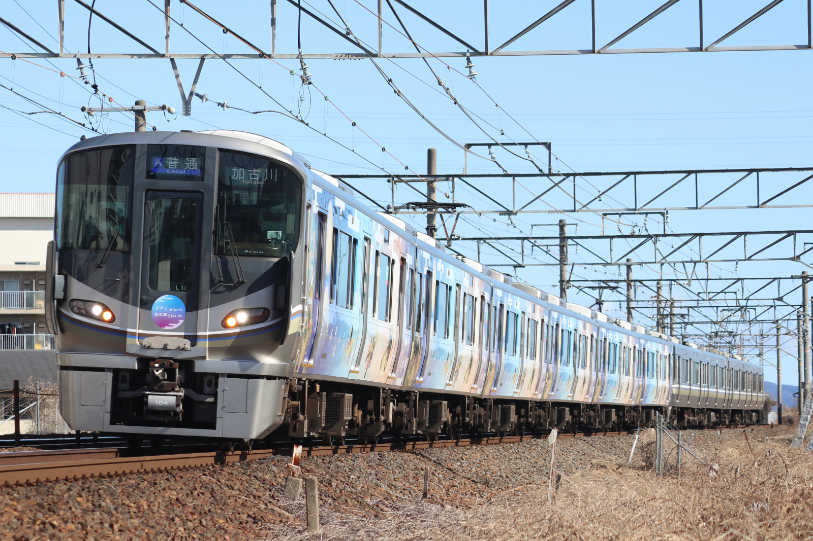

225系L10編成（網干）
編成
←上郡，播州赤穂 長浜→
| クモハ224 | モハ224 | モハ225 | モハ224 | モハ224 | クモハ225 |
|---|---|---|---|---|---|
| 124 | 165 | 131 | 164 | 16 | 124 |
網干新製配置
2022年11月17日
（川車）
|
 | |
| 撮影日 | 2025年1月26日 |
|---|---|
| 列車番号 | 759T |
| 種別・行先 | 普通 加古川行き |
| 撮影地 | 野洲〜守山 |
| 備考 | びわこおおつ紫式部とれいん |

| |
| 撮影日 | 2025年8月26日 |
|---|---|
| 列車番号 | 811T |
| 種別・行先 | 普通 網干行き |
| 撮影地 | 南草津〜瀬田 |
| 備考 | びわこおおつ紫式部とれいん |